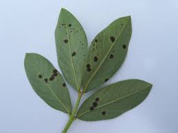

About Late Leaf Spot
Late leaf spot is a fungal disease affecting groundnut plants, caused by Cercosporidium personatum. It appears as circular lesions with dark brown centers and yellow margins on leaves, leading to defoliation and yield loss if left untreated.
Using Organic Fertilizer to Prevent Late Leaf Spot
Organic fertilizers enriched with nutrients like potassium, phosphorus, and micronutrients can enhance plant immunity and resistance to late leaf spot. Recommended organic fertilizers include compost, seaweed extracts, and animal manure.
Organic Prevention Measures
- Plant Resistant Varieties: Choose groundnut varieties with natural resistance to late leaf spot.
- Soil Management: Maintain well-draining soil with balanced pH and optimal nutrient levels using organic amendments.
- Crop Rotation: Rotate groundnut crops with non-host plants to break disease cycles.
- Biological Control: Use beneficial microbes and fungi to suppress fungal pathogens causing late leaf spot.
- Proper Irrigation: Avoid overwatering and ensure adequate soil moisture to prevent fungal growth.
Conclusion
Implementing organic fertilizers, adopting preventive measures, and selecting disease-resistant varieties are key strategies to effectively manage and prevent late leaf spot in groundnut plants, ensuring healthier crops and improved yields.